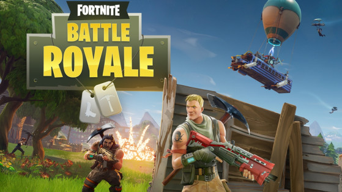
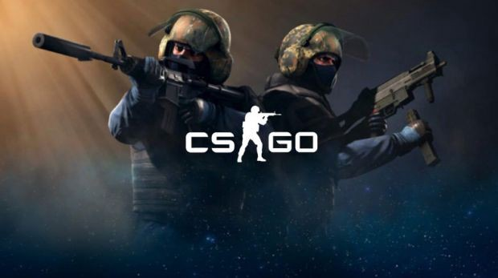
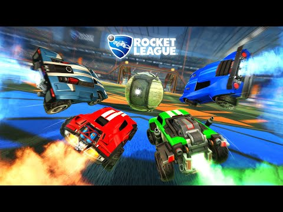

On my free time I enjoy playing PC games so I decided to create a website page describing some of the most popular PC games, and some of them I play myself.
Release Date: November 18, 2011
Modes: Single/Multiplayer

Official Website: Official Minecraft
Microsoft Website for Minecraft: Cross-Platform Minecraft
Available Minecraft Download Platforms:
Description: Minecraft is a sandbox video game developed by Mojang. The game was created by Markus "Notch" Persson in the Java programming language. In Minecraft, players navigate a blocky, procedurally generated 3D environment of endless terrain and can discover and extract raw materials, craft instruments and objects, and construct buildings or earthworks. Players can battle computer-controlled "mobs" as well as interact with or compete against other players in the same environment, depending on the game mode. Game modes include a survival mode in which players need to gain resources to create the globe and preserve health, and an creative mode with infinite resources for players. To build new gameplay elements, objects, and properties, players may change the game.
More Information can be found on this website.
Trailer:
Release Date: July 25, 2017
Modes: Single/Multiplayer
Official Website: Official Fortnite
Microsoft Website: Microsoft Fortnite Page
Available Fortnite Download Platforms:
Description: Fornite is a survival game where in player versus player battle, 100 players compete against each other to be the last one to stand. Not unlike The Hunger Games, it is a fast-paced, action-packed game where strategic thinking is a must in order to survive. Fortnite accounts for an unprecedented 125 million players.
You can find more information about Fortnite on this website.
Trailer:
Release Date: August 21, 2012
Modes: Single/Multiplayer
Official Website: Official Counter-Strike: Global Offensive Website
Steam Website: Steam CSGO Page
Available CSGO Download Platforms:
Description: Counter-Strike: Global Offensive (CS:GO) is a video game developed by Valve and Hidden Path Entertainment for multiplayer first-person shooters. It is the fourth title in the Counter-Strike series and was released in August 2012 for Windows, macOS, Xbox 360, and PlayStation 3, and was released in 2014 for Linux. The match matches two teams against each other: the Counter-Terrorists and the Terrorists. All groups are concerned with removing the other while achieving different objectives as well. The terrorists must either plant the bomb or protect the hostages, depending on the game style, while the counter-terrorists must either stop the bomb from being planted, defuse the bomb, or rescue the hostages.
More Information about CSGO can be found on this website.
Trailer:
Release Date: July 7, 2015
Modes: Single/Multiplayer
Official Website: Official Rocket League Website
Steam Website: Steam CSGO Page
Epic Games Website: Epic Games Rocket League Download
Available Rocket League Download Platforms:
Description: Rocket League, developed by Psyonix (it's "soccer with cars"), is a great sport-based video game. It features a competitive game mode focused on teamwork and outmaneuvering enemies. In order to move the ball down the field and score goals in the net of their opponents, players work with their team.
More Information about Rocket League can be found on this website.
Trailer: